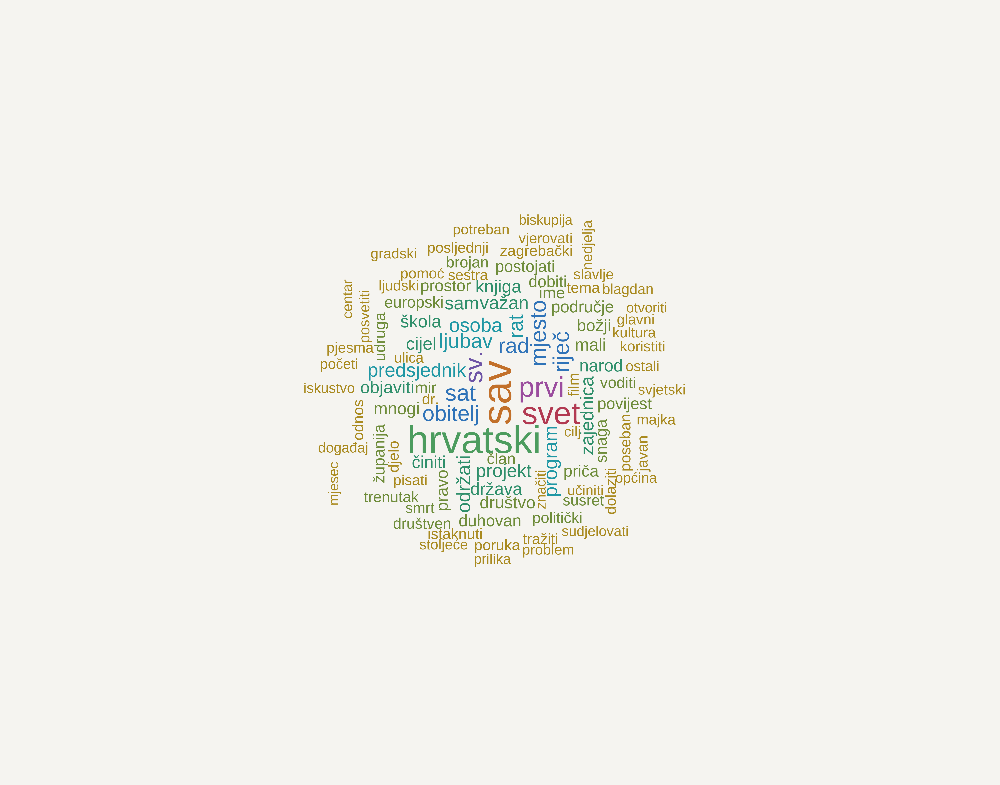
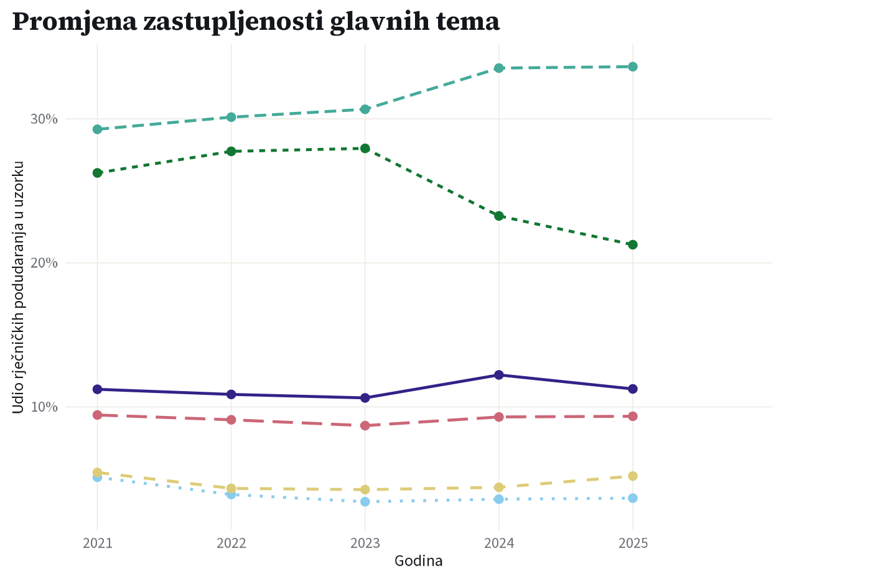
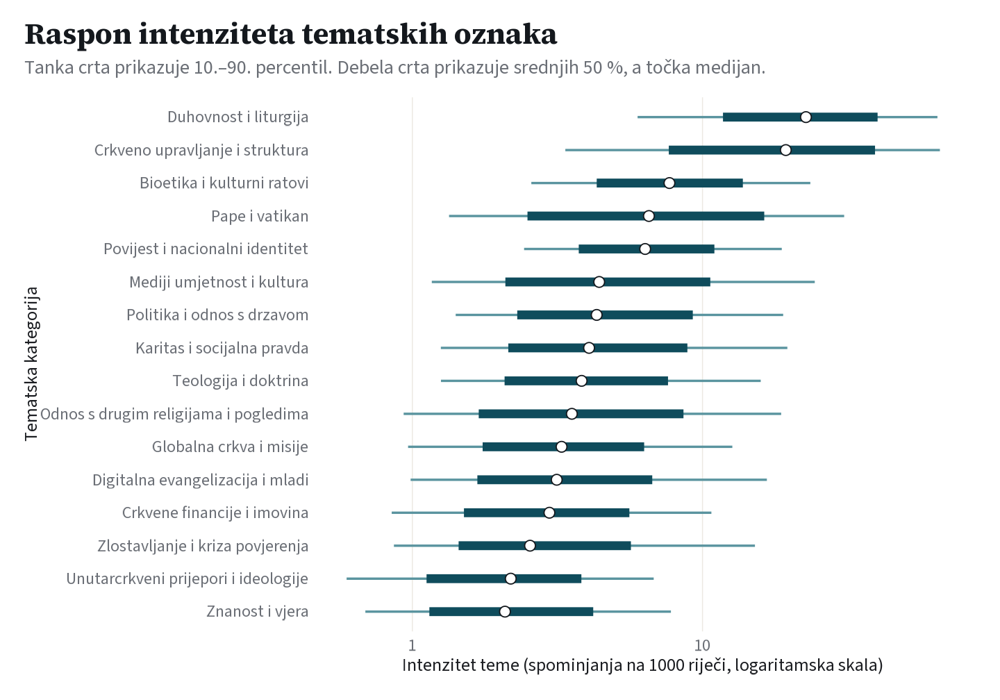
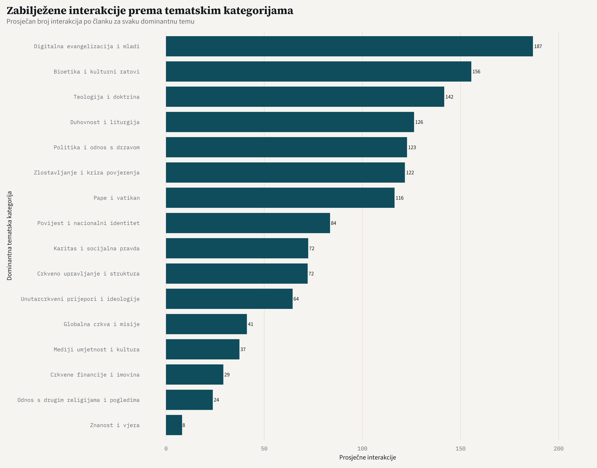
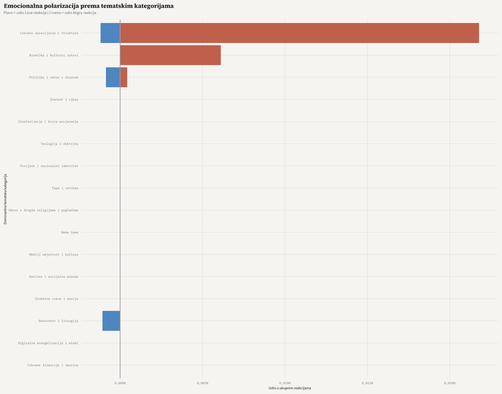
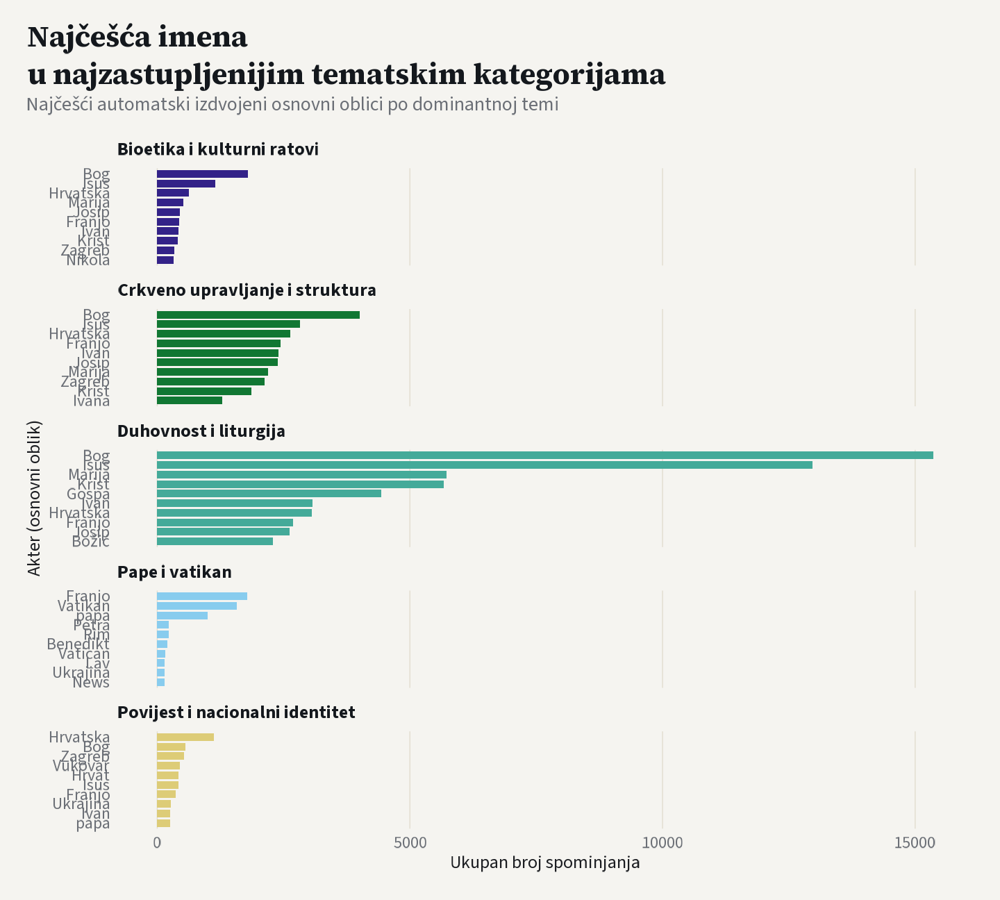
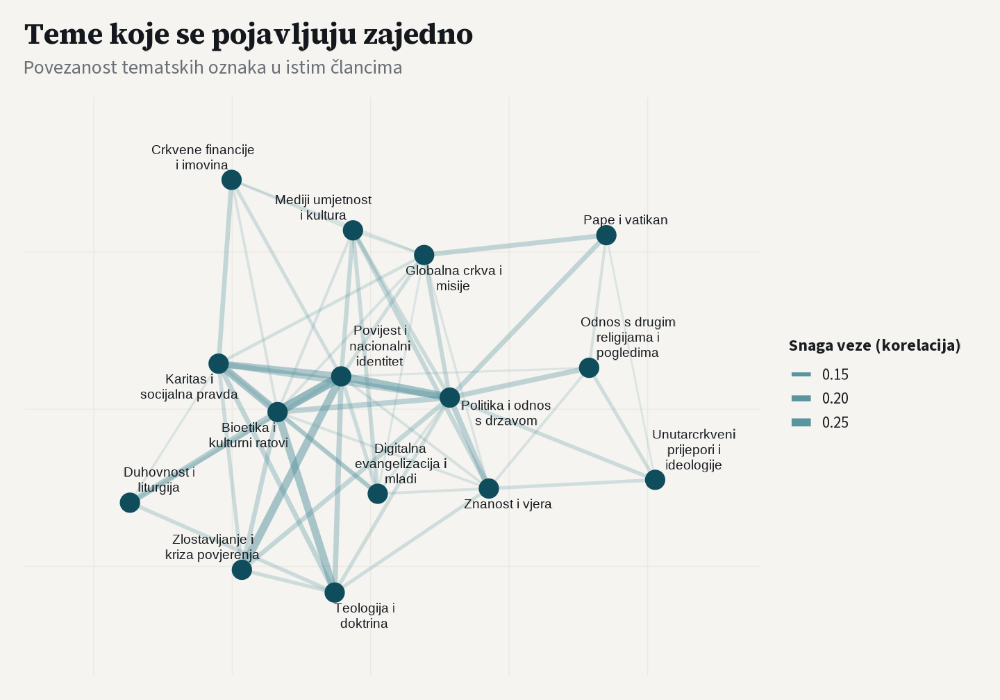

Anatomija diskursa katoličkog digitalnog prostora u Hrvatskoj (2021-2025)
Tematske struje u korpusu
Tematske struje
NLP
16 kategorija
Published
June 25, 2026
Uvod u analizu sadržaja diskursa
Nakon pregleda glavnih aktera i platformi u prvoj mapi, ova mapa usmjerava analitički fokus na sadržaj digitalnog diskursa. Primjenjujući metode obrade prirodnog jezika na korpusu od preko 610 tisuća medijskih objava u razdoblju 2021. do 2025., analiza premješta fokus s pitanja tko i gdje na pitanje o čemu se govori.
Cilj mape je dati pregled diskursa u tri dijela Prvi dio uključuje identifikaciju glavnih tematskih kategorija. Drugi dio obuhvaća mjerenje njihovog intenziteta, utjecaja i polarizacijskog potencijala. Treći dio otkriva obrasce međusobne povezanosti tema i njihove temporalne dinamike. Analiza koristi vođeni pristup tematskom modeliranju. Na temelju teološke i komunikološke ekspertize definirano je 16 glavnih tematskih kategorija. Ovaj pristup omogućuje preciznu i interpretativnu klasifikaciju sadržaja, nadilažeći ograničenja isključivo strojnog učenja koje često generira tematske kategorije slabije interpretabilnosti.
Prije detaljne tematske analize, prezentiramo pogled iz široke perspektive na leksičku strukturu korpusa. Sljedeći oblak riječi prikazuje 100 najfrekventnijih riječi, odnosno imenica, pridjeva i glagola, u cjelokupnom korpusu od preko 610.000 medijskih objava. Veličina svake riječi proporcionalna je njenoj ukupnoj frekvenciji u korpusu. Ovaj vizualni sažetak odmah otkriva središnje entitete i koncepte koji čine srž diskursa. Prednjače riječi crkva, papa, biskup, Hrvatska, život, godina, čovjek, vjera i molitva, što upućuje na glavne koncepte i aktere katoličkog digitalnog prostora.

Riječi poput crkva i papa nisu samo statistički značajne. One evociraju svakodnevni život hrvatskih vjernika. Ove riječi označavaju kontinuum iskustva, od intimnosti nedjeljnih misa u lokalnim župama do praćenja medijskih rasprava o vatikanskim odlukama. Njihova prisutnost u korpusu pokazuje kako katolička tematika prožima istovremeno duhovni i društveni sloj hrvatskog društva. Sadržaj o vjeri nije odvojen od društvene stvarnosti, već predstavlja integralni dio javnog diskursa, spajajući privatnu pobožnost s javnim angažmanom.
Struktura tematskog pejzaža
Prvi dio tematske analiza je usmjeren prema razumijevanju opće strukture diskursa. U tom cilju odgovaramo na sljedeća pitanja: Koje tematske kategorije prevladavaju, a koje zauzimaju marginalne pozicije? Kako se njihova zastupljenost mijenja kroz promatrano razdoblje? Koliko su te teme centralne za članke u kojima se pojavljuju?
Vremenska dinamika tematskih kategorija
Analiza udjela pojedine tematske kategorije u ukupnom sadržaju otkriva relativno stabilnu strukturu, ali i suptilne promjene kroz promatrano razdoblje. Teme vezane za Duhovnost i liturgiju te Crkveno upravljanje i strukturu čine okosnicu diskursa. Značajan udio zauzimaju i teme koje povezuju Crkvu sa širim društvenim kontekstom, posebno Politika i odnos s državom te Bioetika i kulturni ratovi.

Intenzitet i centralnost tematskih kategorija
Frekvencija tema nije jedini relevantan indikator. Potrebno je razumjeti i centralnost teme za tekstove u kojima se pojavljuje. Ovaj grafikon prikazuje distribuciju intenziteta tematskih kategorija, mjerenog brojem tematskih spominjanja normaliziranih na tisuću riječi.
Teme s distribucijom pomaknutom udesno, poput Duhovnosti i liturgije, karakterizira visoka centralnost. Kada se ove teme pojave u tekstu, one obično predstavljaju primarni fokus i mogu se smatrati glavnom viješću. Teme s distribucijom bliže lijevoj strani, poput Unutarcrkvenih prijepora i ideologija, češće se spominju usputno, kao kontekstualni element unutar tekstova čija je primarna tema drugačija.

Utjecaj i recepcija tematskih kategorija
Nakon mapiranja tematske strukture, drugi dio analize se usmjerava na način na koji publika reagira na različite tematske kategorije. Koje teme generiraju najveći angažman publike? Koje teme izazivaju najsnažnije emocionalne reakcije i koje su to reakcije?
Angažman publike prema tematskim kategorijama
Analiza prosječnog broja interakcija po članku, kategorizirano prema dominantnoj temi, otkriva značajne varijacije u angažmanu. Teme koje se tiču Unutarcrkvenih prijepora i ideologija, Bioetike i kulturnih ratova te Zlostavljanja i krize povjerenja generiraju značajno veći angažman od tema vezanih za Duhovnost i liturgiju ili institucionalno funkcioniranje Crkve.
Ovaj obrazac upućuje na mehanizam prema kojem konflikt, kontroverza i krizni narativi djeluju kao glavni pokretači interakcija u digitalnom prostoru. Teme koje izazivaju neslaganje ili zahtijevaju zauzimanje stava aktiviraju publiku na participaciju, dok teme konsenzusa ili rutinske prirode generiraju pasivniji prijem.

Emocionalna polarizacija prema tematskim kategorijama
Analizirajući Facebook reakcije, moguće je rekonstruirati emocionalnu valencu odgovora publike na različite tematske kategorije. Fokus je na dihotomiji između pozitivnih reakcija, reprezentiranih reakcijom Love, i negativnih reakcija, reprezentiranih reakcijom Angry.
Rezultati su jasni i konzistentni s prethodnim nalazima. Teme vezane za Duhovnost i liturgiju dominantno izazivaju pozitivne reakcije. Ove teme rezoniraju sa zajedničarskim aspektima vjere i solidarnosti. Nasuprot tome, teme Bioetike i kulturnih ratova, Politike i odnosa s državom te Crkvenog upravljanja i strukture generiraju najveći udio negativnih reakcija, potvrđujući njihovu ulogu kao primarnih točaka polarizacije u medijskom prostoru katoličke tematike.

Pozitivne reakcije na teme poput Duhovnosti i liturgije odražavaju toplinu zajedničkih akcija i solidarnosti. Reakcije Love simboliziraju priznanje i emocionalnu podršku društveno korisnim aktivnostima crkvenih institucija.
Nasuprot tome, ljutnja koja se manifestira u reakcijama na teme Bioetike i kulturnih ratova signalizira duboke podjele u hrvatskom društvu oko pitanja života, etike i obiteljskih vrijednosti. Ova ljutnja nije samo odgovor na sadržaj članaka, već odražava fundamentalne svjetonazorske sukobe koji karakteriziraju hrvatsko društvo. Bioetičke teme djeluju kao okidač za intenzivne reakcije jer zadiru u pitanja identiteta, morala i odnosa između religijske i sekularne sfere.
Akteri i narativni okviri
Nakon identifikacije tematskih kategorija i mjerenja njihovog utjecaja, analiza u trećem dijelu prelazi na ispitivanje aktera koji nose te narative, te načina na koji se teme međusobno povezuju u šire narativne okvire. Ovaj dio integrira tematsku analizu s analizom aktera i mrežnom analizom diskursa.
Protagonisti tematskih kategorija
Svaka tematska kategorija ima svoje glavne protagoniste, odnosno aktere koji se najčešće spominju u kontekstu te teme. Analizom najfrekventnijih imenskih entiteta unutar svake dominantne teme dobiva se uvid u to koji su pojedinci i institucije nositelji specifičnih narativa.
Rezultati pokazuju očekivanu ali važnu strukturu. Političari prevladavaju s temama vezanim za Politiku i odnos s državom, gdje se najčešće spominju imena aktualnih političkih čelnika. Crkveni velikodostojnici prevladavaju institucionalnim temama i temama vezanim za Pape i Vatikan. Ova diferencijacija potvrđuje funkcionalne granice između različitih tematskih domena unutar medijskog prostora katoličke tematike.

Mreža povezanosti tematskih kategorija
Tematske kategorije se rijetko pojavljuju izolirano. One se kombiniraju i isprepliću, tvoreći šire narativne okvire. Analizirajući kookurentnost tematskih kategorija unutar istih članaka, moguće je mapirati strukturu ovih veza. Mreža prikazuje koje se teme najčešće pojavljuju zajedno, otkrivajući latentne narativne strukture.
Vizualizacija pokazuje jasnu segmentaciju. Postoji snažna povezanost između tema Politike i odnosa s državom, Povijesti i nacionalnog identiteta te Bioetike i kulturnih ratova, tvoreći dominantan društveno politički klaster. Ovaj klaster predstavlja prostor gdje se katolička tematika najintenzivnije isprepliće s pitanjima nacionalnog identiteta i političke pripadnosti. S druge strane, teme poput Duhovnosti i liturgije te Karitasa i socijalne pravde čine relativno odvojen, pastoralni klaster. Ove teme fokusirane su na internu crkvenu praksu i humanitarni rad, s manjim naglaskom na široke društvene kontroverze.

Sinteza i zaključci
Analiza sadržaja razotkriva da medijski prostor katoličke tematike u Hrvatskoj nije monolitna cjelina. Diskurs je strukturiran oko različitih, djelomično autonomnih tematskih domena koje funkcioniraju prema različitim logikama i obraćaju se različitim publikama.
Dva tematska svijeta
Diskurs se dijeli na pastoralni svijet (duhovnost, karitas, evangelizacija) koji izaziva pozitivne reakcije i zajedništvo, te društveno politički svijet (politika, nacionalni identitet, bioetika) koji generira najveći angažman, ali i najsnažniju polarizaciju.
Identificirana je jasna segmentacija na dva primarna tematska svijeta. Prvi je pastoralni svijet, koji okuplja teme Duhovnosti i liturgije, Karitasa i socijalne pravde te Digitalne evangelizacije. Ovaj svijet fokusiran je na internu crkvenu praksu, duhovni razvoj i socijalni angažman. Karakterizira ga dominantno pozitivan prijem kod publike, s visokim udjelom Love reakcija. Ove teme rezoniraju sa aspektima vjere i zajedništva te ne izazivaju značajnu polarizaciju.
Drugi je društveno politički svijet, gdje se isprepliću teme Politike i odnosa s državom, Povijesti i nacionalnog identiteta te Bioetike i kulturnih ratova. Ovaj svijet predstavlja prostor najintenzivnije društvene konfliktnosti. Ove teme generiraju najveći angažman publike, ali istovremeno i najsnažniju polarizaciju, s visokim udjelom Angry reakcija. One funkcioniraju kao žarišta svjetonazorskih sukoba koji karakteriziraju suvremeno hrvatsko društvo.
Mreža povezanosti tematskih kategorija otkriva dodatnu kompleksnost. Ova mreža nije samo dijagram apstraktnih veza. Ona prikazuje kako se konkretne teme iz pastoralnog svijeta, poput Duhovnosti i liturgije, u specifičnim kontekstima prepliću s političkim temama. Primjer je rasprava o crkvenim stavovima prema izborima ili bioetičkim pitanjima, gdje se liturgijski autoritet instrumentalizira za političke svrhe. Ova prožimanja stvaraju bogat sustav koji odražava kompleksnost katoličkog života u Hrvatskoj, gdje se vjera istovremeno doživljava kao privatna duhovnost i javni identitetski marker.
Razumijevanje ove strukture, uključujući intenzitet, utjecaj i povezanost tematskih kategorija, predstavlja temelj za sve buduće analize narativa i sentimenta. Nakon razumijevanja onoga što se govori, potrebno je produbiti razumijevanje kako se govori i s kojim komunikacijskim namjerama. Upravo to će biti fokus treće analitičke mape.
Source Code
---title: "Anatomija diskursa katoličkog digitalnog prostora u Hrvatskoj (2021-2025)"subtitle: "Tematske struje u korpusu"date: last-modifiedcategories: ["Tematske struje", "NLP", "16 kategorija"]---```{r}#| label: setup#| include: false# Globalne postavke za dokumentknitr::opts_chunk$set(echo =FALSE,message =FALSE,warning =FALSE,fig.width =14,fig.height =11,dpi =200)``````{r}#| label: libraries#| include: false# Učitavanje svih potrebnih paketa na jednom mjestulibrary(scales)library(patchwork)library(ggrepel)library(udpipe)library(dplyr)library(tidytext)library(stringr)library(ggplot2)source("../../R/theme_digikat.R")library(forcats)library(tidyr)library(ggridges)library(widyr)library(ggraph)library(igraph)library(wordcloud)library(RColorBrewer)``````{r}#| label: data-preparation#| include: false# Priprema podataka (izvršava se u pozadini)# Učitavanje glavne baze podataka (2021-2025) i čišćenjedta <-readRDS("../../data/merged_comprehensive.rds") %>%filter(SOURCE_TYPE !="tiktok", !is.na(SOURCE_TYPE)) %>%filter(DATE >=as.Date("2021-01-01") & DATE <=as.Date("2025-12-31")) %>%filter(year >=2021& year <=2025)# Kreiranje stratificiranog uzorkasample_proportion <-0.05set.seed(123)dta_stratified_sample <- dta %>%filter(nchar(FULL_TEXT) >100) %>%group_by(year, SOURCE_TYPE) %>%slice_sample(prop = sample_proportion) %>%ungroup() %>%mutate(doc_id =row_number())# Učitavanje prethodno obrađenih lingvističkih podataka (štedi vrijeme)files <-list.files("../../data/nlp", full.names =TRUE, pattern ="\\.rds")nlp_results_df <-lapply(files, readRDS) %>%bind_rows() %>%mutate(doc_id =as.integer(doc_id))# Definicija tematskih rječnika v3thematic_dictionaries_v3 <-list(DUHOVNOST_I_LITURGIJA =c("molitv", "mis", "euharistij", "sakrament", "duhovn", "vjer", "blagoslov", "gosp", "hodočašć", "propovijed", "klanjanj", "zornic", "liturgij", "advent", "korizm", "blagdan", "svetkovin", "krunic", "brevijar", "duhovne vježbe"),TEOLOGIJA_I_DOKTRINA =c("teologij", "dogm", "eshatologij", "kristologij", "trojstv", "grijeh", "spasenje", "opravdanje", "moral", "krštenje", "biblija", "sveto pismo", "evanđelj"),CRKVENO_UPRAVLJANJE_I_STRUKTURA =c("crkv", "biskup", "nadbiskup", "kardinal", "sveta stolica", "hbk", "žup", "svećenic", "kler", "redovnik", "časna sestra", "laik", "dekanat", "biskupija"),PAPE_I_VATIKAN =c("papa franjo", "benedikt xvi", "ivan pavao ii", "vatikan", "dikasterij", "enciklik", "sinodalni put", "sveti otac", "konklav", "apostolsk"),CRKVENE_FINANCIJE_I_IMOVINA =c("financij", "imovin", "novac", "proračun", "porez", "restitucij", "ugovor sa svetom stolicom", "nekretnin", "donacij", "milodar"),GLOBALNA_CRKVA_I_MISIJE =c("misije", "misionar", "progonjeni kršćani", "svjetski dan mladih", "afrik", "azij", "južna amerik", "svjetska crkva", "papinsk"),POLITIKA_I_ODNOS_S_DRZAVOM =c("izbor", "vlada", "strank", "hdz", "sdp", "sabor", "zakon", "predsjednik", "politi", "europ", "milanović", "plenković", "ustav", "sekularnost", "vjeronauk u školi"),BIOETIKA_I_KULTURNI_RATOVI =c("obitelj", "život", "pobačaj", "abortus", "brak", "roditelj", "djec", "spol", "rodn", "hod za život", "lgbt", "istospoln", "eutanazij", "transrodnost", "medicinski potpomognuta oplodnja", "palijativna skrb"),KARITAS_I_SOCIJALNA_PRAVDA =c("caritas", "pomoć", "siromaš", "siroma", "humanitar", "solidarn", "socijaln", "izbjeglic", "potres", "volonter", "socijalni nauk", "ekologij", "laudato si'", "migranti", "pravednost"),POVIJEST_I_NACIONALNI_IDENTITET =c("stepinac", "rat", "komuniz", "jugoslavij", "žrtv", "povijest", "branitelj", "lustracij", "domovinsk", "ustaš", "partizan", "bleiburg", "vukovar", "nacionalni identitet"),ZNANOST_I_VJERA =c("znanost", "evolucij", "stvaranje", "bioetik", "umjetna inteligencija", "svemir", "psihologij", "vjera i razum"),MEDIJI_UMJETNOST_I_KULTURA =c("medij", "film", "glazb", "umjetnost", "književnost", "kazališt", "arhitektur", "sakraln", "kultura", "koncert", "izložb"),DIGITALNA_EVANGELIZACIJA_I_MLADI =c("digitaln", "internet", "društvene mreže", "mladi", "pastoral mladih", "influencer", "podcast", "aplikacij", "evangelizacij", "susret hrvatske katoličke mladeži"),ZLOSTAVLJANJE_I_KRIZA_POVJERENJA =c("zlostavljan", "pedofilij", "skandal", "prikrivan", "nulta tolerancija", "žrtv", "susret sa žrtvama"),UNUTARCRKVENI_PRIJEPORI_I_IDEOLOGIJE =c("tradicionalist", "progresiv", "konzervativ", "liberal", "karizmatik", "lefebvrovci", "tradicijska misa", "aggiornamento", "hermeneutik", "pluraliz"),ODNOS_S_DRUGIM_RELIGIJAMA_I_POGLEDIMA =c("ekumeniz", "međureligijsk", "dijalog", "islam", "pravoslavn", "protestant", "judaiz", "ateiz", "agnosticiz"))# Izračun tematskih scoreova i obogaćivanje baze podatakacalculate_theme_scores <-function(text, dictionaries) { text_lower <-tolower(text) total_words <-str_count(text_lower, "\\w+")if (total_words ==0) return(NULL) scores <- purrr::map(dictionaries, ~sum(str_count(text_lower, .x))) normalized_scores <- purrr::map(scores, ~(.x / total_words) *1000)names(normalized_scores) <-paste0("norm_", names(scores)) scores_vec <-unlist(scores)if(all(scores_vec ==0)){ dominant_topic <-"Nema Teme" } else { dominant_topic <-names(scores)[which.max(scores_vec)] }return(c(as.list(scores), as.list(normalized_scores), dominant_topic = dominant_topic))}theme_analysis_data <- purrr::map_dfr(dta_stratified_sample$FULL_TEXT, ~calculate_theme_scores(., thematic_dictionaries_v3))dta_enriched <-bind_cols(dta_stratified_sample, theme_analysis_data)dta_with_themes <-bind_cols(dta_stratified_sample, theme_analysis_data)```## Uvod u analizu sadržaja diskursaNakon pregleda glavnih aktera i platformi u [prvoj mapi](https://raw.githack.com/lusiki/DigiKat/main/docs/pages/mapa/mapa.html), ova mapa usmjerava analitički fokus na sadržaj digitalnog diskursa. Primjenjujući metode obrade prirodnog jezika na korpusu od preko 610 tisuća medijskih objava u razdoblju 2021. do 2025., analiza premješta fokus s pitanja tko i gdje na pitanje o čemu se govori.Cilj mape je dati pregled diskursa u tri dijela Prvi dio uključuje identifikaciju glavnih tematskih kategorija. Drugi dio obuhvaća mjerenje njihovog intenziteta, utjecaja i polarizacijskog potencijala. Treći dio otkriva obrasce međusobne povezanosti tema i njihove temporalne dinamike. Analiza koristi vođeni pristup tematskom modeliranju. Na temelju teološke i komunikološke ekspertize definirano je 16 glavnih tematskih kategorija. Ovaj pristup omogućuje preciznu i interpretativnu klasifikaciju sadržaja, nadilažeći ograničenja isključivo strojnog učenja koje često generira tematske kategorije slabije interpretabilnosti.<div class="metric-grid"> <div class="metric-card"> <div class="metric-value">16</div> <div class="metric-label">Tematskih kategorija</div> </div> <div class="metric-card"> <div class="metric-value">70+</div> <div class="metric-label">Religijskih pojmova</div> </div> <div class="metric-card"> <div class="metric-value">610.000+</div> <div class="metric-label">Medijskih objava</div> </div> <div class="metric-card"> <div class="metric-value">2021.–2025.</div> <div class="metric-label">Razdoblje analize</div> </div></div><p> <span class="tag tag-primary">R</span> <span class="tag tag-primary">UDPipe HR 2.5</span> <span class="tag">NLP</span> <span class="tag">Lematizacija</span> <span class="tag">Tematsko modeliranje</span> <span class="tag">Mrežna analiza</span></p>## Leksička struktura korpusaPrije detaljne tematske analize, prezentiramo pogled iz široke perspektive na leksičku strukturu korpusa. Sljedeći oblak riječi prikazuje 100 najfrekventnijih riječi, odnosno imenica, pridjeva i glagola, u cjelokupnom korpusu od preko 610.000 medijskih objava. Veličina svake riječi proporcionalna je njenoj ukupnoj frekvenciji u korpusu. Ovaj vizualni sažetak odmah otkriva središnje entitete i koncepte koji čine srž diskursa. Prednjače riječi crkva, papa, biskup, Hrvatska, život, godina, čovjek, vjera i molitva, što upućuje na glavne koncepte i aktere katoličkog digitalnog prostora.```{r}#| label: plot-wordcloud#| fig-height: 11#| fig-width: 14# Priprema teksta: Lematizacija i uklanjanje zaustavnih riječi# Učitajmo standardne hrvatske zaustavne riječistop_words_hr <-tibble(word =c(# Originalna lista"i", "u", "je", "na", "se", "su", "s", "za", "od", "o", "a", "te", "koji", "koja", "koje", "ga", "mu", "joj", "smo", "kao",# Prijedlozi (Prepositions)"bez", "blizu", "do", "duž", "ispred", "iza", "između", "iznad", "izvan", "k", "kod", "kraj", "mimo", "na", "nad", "nakon", "niže", "o", "od", "oko", "osim", "po", "pod", "pokraj", "poput", "pored", "poslije", "povrh", "preko", "prema", "pri", "prije", "protiv", "put", "radi", "s", "sa", "skupa", "tijekom", "u", "unatoč", "unutar", "usprkos", "uz", "van", "više", "zaradi", "zbog",# Veznici (Conjunctions)"a", "ali", "ama", "bilo", "da", "dakle", "dok", "eda", "i", "ili", "inače", "jer", "kad", "kako", "li", "makar", "mada", "nego", "negoli", "no", "pa", "pak", "premda", "samo", "što", "te", "ter", "već", "zatim", "zato",# Zamjenice (Pronouns)"ja", "ti", "on", "ona", "ono", "mi", "vi", "oni", "one", "ona", "sebe", "svoj", "moj", "tvoj", "njegov", "njezin", "naš", "vaš", "njihov", "ovaj", "ova", "ovo", "taj", "ta", "to", "onaj", "ona", "ono", "koji", "koja", "koje", "čiji", "čija", "čije", "kakav", "kakva", "kakvo", "kolik", "kolika", "koliko", "tko", "što", "nitko", "ništa", "itko", "išta", "svatko", "svašta", "svakakav", "nikakav", "ikakav", "nekakav",# Čestice (Particles)"da", "ne", "li", "zar", "čak", "dapače", "evo", "eto", "eno", "gle", "god", "pak", "samo", "valjda", "vjerojatno", "zaista",# Prilozi (Adverbs)"gdje", "kamo", "kuda", "otkud", "odakle", "dokle", "ovdje", "ondje", "onamo", "ovamo", "ovuda", "onuda", "tada", "sada", "onda", "nikada", "nekada", "ponekad", "često", "rijetko", "uvijek", "stalno", "povremeno", "danas", "sutra", "jučer", "preksutra", "prekjučer", "lani", "zimus", "ljetos", "proljetos", "jesenas", "kako", "tako", "nikako", "nekako", "ovako", "onako", "zašto", "zato", "stoga", "koliko", "toliko", "ovoliko", "onoliko", "malo", "puno", "mnogo", "više", "manje", "najviše", "najmanje", "brzo", "sporo", "dobro", "loše", "jako", "slabo", "vrlo", "prilično", "sasvim", "gotovo", "jedva",# Pomoćni glagoli (Auxiliary Verbs)"biti", "jesam", "jesi", "jest", "jesmo", "jeste", "jesu", "bih", "bi", "bismo", "biste", "biše", "ću", "ćeš", "će", "ćemo", "ćete", "hoću", "hoćeš", "hoće", "hoćemo", "hoćete", "htjeti", "imam", "imaš", "ima", "imamo", "imate", "imaju", "imati", "nemam", "nemaš", "nema", "nemamo", "nemate", "nemaju", "nemati",# Česti glagoli (Common Verbs)"ići", "doći", "otići", "reći", "kazati", "govoriti", "pitati", "odgovoriti", "vidjeti", "gledati", "znati", "misliti", "moći", "morati", "trebati", "željeti", "htjeti", "dati", "uzeti", "napraviti", "raditi", "živjeti", "umrijeti", "roditi", "stajati", "sjediti", "ležati", "postati", "ostati", "nalaziti",# Česte imenice (Common Nouns)"stvar", "dio", "godina", "dan", "vrijeme", "čovjek", "ljudi", "žena", "muškarac", "dijete", "život", "svijet", "zemlja", "grad", "kuća", "posao", "ruka", "noga", "oko", "glava", "srce", "broj", "primjer", "način", "pitanje", "odgovor", "početak", "kraj", "strana", "slučaj",# Česti pridjevi (Common Adjectives)"velik", "malen", "dobar", "loš", "nov", "star", "lijep", "ružan", "visok", "nizak", "mlad", "star", "jak", "slab", "brz", "spor", "topao", "hladan", "pun", "prazan", "lak", "težak", "isti", "drugi", "različit", "jednostavan", "složen", "moguć", "nemoguć", "poznat", "nepoznat", "pravi", "krivi",# Česte imenice (Common Verbs)"godina", "moći"))# Prilagođena lista religijskih zaustavnih riječicustom_stop_words <-tibble(word =c(# Originalna lista"bog", "isus", "gospodin", "moliti", "molitva", "amen",# Kršćanstvo (Christianity) - Općenito"krist", "biblija", "sveto pismo", "evanđelje", "crkva", "vjera", "vjernik", "grijeh", "pokajanje", "spasenje", "uskrsnuće", "krštenje", "euharistija", "sakrament", "apostol", "prorok", "svetac", "anđeo", "đavao", "sotona", "raj", "pakao", "čistilište", "milost", "blagoslov", "žrtva", "otkupljenje", "trojstvo", "duh sveti", "gospa", "djevica marija", "molitva", "post", "hodočašće", "župa", "župnik", "biskup", "kardinal", "papa", "pastir", "stado", "jaganjac božji",# Katolicizam (Catholicism)"katolički", "rimokatolički", "sveta stolica", "vatikan", "krunica", "misa", "ispovijed", "pričest", "krizma", "blaženi", "sveti", "nadbiskup", "opat", "časna sestra", "fratar", "svećenik", "kapelan", "celibat", "enciklika", "koncil",# Pravoslavlje (Orthodoxy)"pravoslavni", "patrijarh", "episkop", "mitropolit", "ikona", "ikonostas", "liturgija", "pričešće", "krst", "slava", "parohija", "paroh", "manastir", "iguman", "monah", "pravoslavlje",# Protestantizam (Protestantism)"protestantski", "evangelički", "reformacija", "luteran", "kalvinist", "baptist", "pentekostalac", "adventist", "pastor", "prezbiter", "đakon", "propovijed", "slavljenje",# Islam"islam", "musliman", "kur'an", "muhamed", "alah", "džamija", "minaret", "imam", "hodža", "efendija", "ramazan", "bajram", "hadž", "meka", "medina", "šerijat", "suniti", "šijiti", "džihad", "halal", "haram", "salat", "zekat", "šehadet",# Judaizam (Judaism)"judaizam", "židov", "tora", "talmud", "sinagoga", "rabin", "košer", "šabat", "pasha", "jom kipur", "roš hašana", "hanuka", "menora", "jahve", "adonaj",# Budizam (Buddhism)"budizam", "buda", "dharma", "sangha", "karma", "nirvana", "reinkarnacija", "meditacija", "zen", "dalaj lama", "sutre", "mantra", "stupa", "bodisatva",# Hinduizam (Hinduism)"hinduizam", "hindus", "vede", "upanišade", "bhagavad gita", "brahma", "višnu", "šiva", "krišna", "rama", "šakti", "ganeša", "guru", "svami", "ašram", "joga", "mokša", "samsara", "pudža",# Opći religijski i duhovni pojmovi (General Religious and Spiritual Terms)"religija", "duhovnost", "božanstvo", "božica", "mitologija", "obred", "ritual", "hram", "svetište", "oltar", "proročanstvo", "otkrivenje", "sudnji dan", "eshatologija", "teologija", "filozofija", "etika", "moral", "duša", "duh", "zagrobni život", "vječnost", "stvaranje", "stvoritelj", "prosvjetljenje", "spoznaja", "transcendencija", "imanencija", "sveto", "profano", "hereza", "sekta", "kult"))# Kombiniramo listeall_stop_words <-bind_rows(stop_words_hr, custom_stop_words)words_to_remove <-c("godina", "moći")word_freq_for_cloud <- nlp_results_df %>%filter(upos %in%c("NOUN", "ADJ", "VERB")) %>%filter(!lemma %in% stop_words_hr) %>%filter(!lemma %in% words_to_remove) %>%count(lemma, sort =TRUE)# Kreiranje vizualizacijewordcloud(words = word_freq_for_cloud$lemma,freq = word_freq_for_cloud$n,min.freq =50,max.words =100,random.order =FALSE,rot.per =0.30,colors =brewer.pal(8, "Dark2"))```Riječi poput crkva i papa nisu samo statistički značajne. One evociraju svakodnevni život hrvatskih vjernika. Ove riječi označavaju kontinuum iskustva, od intimnosti nedjeljnih misa u lokalnim župama do praćenja medijskih rasprava o vatikanskim odlukama. Njihova prisutnost u korpusu pokazuje kako katolička tematika prožima istovremeno duhovni i društveni sloj hrvatskog društva. Sadržaj o vjeri nije odvojen od društvene stvarnosti, već predstavlja integralni dio javnog diskursa, spajajući privatnu pobožnost s javnim angažmanom.---## Struktura tematskog pejzažaPrvi dio tematske analiza je usmjeren prema razumijevanju opće strukture diskursa. U tom cilju odgovaramo na sljedeća pitanja: Koje tematske kategorije prevladavaju, a koje zauzimaju marginalne pozicije? Kako se njihova zastupljenost mijenja kroz promatrano razdoblje? Koliko su te teme centralne za članke u kojima se pojavljuju?### Vremenska dinamika tematskih kategorijaAnaliza udjela pojedine tematske kategorije u ukupnom sadržaju otkriva relativno stabilnu strukturu, ali i suptilne promjene kroz promatrano razdoblje. Teme vezane za Duhovnost i liturgiju te Crkveno upravljanje i strukturu čine okosnicu diskursa. Značajan udio zauzimaju i teme koje povezuju Crkvu sa širim društvenim kontekstom, posebno Politika i odnos s državom te Bioetika i kulturni ratovi.```{r}#| label: plot-topic-trends#| fig-width: 14#| fig-height: 11topic_trends_guided <- dta_with_themes %>%select(year, DUHOVNOST_I_LITURGIJA:ODNOS_S_DRUGIM_RELIGIJAMA_I_POGLEDIMA) %>%pivot_longer(cols =-year, names_to ="topic", values_to ="count") %>%group_by(year, topic) %>%summarise(total_mentions =sum(count), .groups ='drop') %>%group_by(year) %>%mutate(share = total_mentions /sum(total_mentions)) %>%ungroup() %>%group_by(topic) %>%filter(any(share >=0.05)) %>%ungroup()ggplot(topic_trends_guided, aes(x = year, y = share, color = topic, group = topic)) +geom_line(linewidth =1.5) +geom_point(size =4) +scale_y_continuous(labels = scales::percent_format()) +scale_x_continuous(breaks =c(2021, 2022, 2023, 2024, 2025)) +labs(title ="Promjena zastupljenosti glavnih tema (iznad 5% udjela)",x ="Godina", y ="Udio spominjanja u korpusu", color ="Tema") +theme_digikat(base_size =16) +theme(legend.position ="bottom")```### Intenzitet i centralnost tematskih kategorijaFrekvencija tema nije jedini relevantan indikator. Potrebno je razumjeti i centralnost teme za tekstove u kojima se pojavljuje. Ovaj grafikon prikazuje distribuciju intenziteta tematskih kategorija, mjerenog brojem tematskih spominjanja normaliziranih na tisuću riječi.Teme s distribucijom pomaknutom udesno, poput Duhovnosti i liturgije, karakterizira visoka centralnost. Kada se ove teme pojave u tekstu, one obično predstavljaju primarni fokus i mogu se smatrati glavnom viješću. Teme s distribucijom bliže lijevoj strani, poput Unutarcrkvenih prijepora i ideologija, češće se spominju usputno, kao kontekstualni element unutar tekstova čija je primarna tema drugačija.```{r}#| label: plot-topic-intensity#| fig-width: 14#| fig-height: 11thematic_intensity_data <- dta_enriched %>%select(starts_with("norm_")) %>%pivot_longer(everything(), names_to ="topic", values_to ="intensity") %>%mutate(topic =str_remove(topic, "norm_")) %>%filter(intensity >0)ggplot(thematic_intensity_data, aes(x = intensity, y =fct_reorder(topic, intensity, .fun = median))) +geom_density_ridges(scale =2, fill ="#0072B2", color ="white", alpha =0.8) +scale_x_log10(breaks =c(1, 10, 100, 1000), labels =c("1", "10", "100", "1000")) +theme_digikat(base_size =16) +labs(title ="Distribucija intenziteta tematskih kategorija",subtitle ="Koliko su teme centralne za tekstove u kojima se pojavljuju?",x ="Intenzitet teme (spominjanja na 1000 riječi, logaritamska skala)",y ="Tematska kategorija" ) +theme(panel.grid.major.y =element_blank())```---## Utjecaj i recepcija tematskih kategorijaNakon mapiranja tematske strukture, drugi dio analize se usmjerava na način na koji publika reagira na različite tematske kategorije. Koje teme generiraju najveći angažman publike? Koje teme izazivaju najsnažnije emocionalne reakcije i koje su to reakcije?### Angažman publike prema tematskim kategorijamaAnaliza prosječnog broja interakcija po članku, kategorizirano prema dominantnoj temi, otkriva značajne varijacije u angažmanu. Teme koje se tiču Unutarcrkvenih prijepora i ideologija, Bioetike i kulturnih ratova te Zlostavljanja i krize povjerenja generiraju značajno veći angažman od tema vezanih za Duhovnost i liturgiju ili institucionalno funkcioniranje Crkve.Ovaj obrazac upućuje na mehanizam prema kojem konflikt, kontroverza i krizni narativi djeluju kao glavni pokretači interakcija u digitalnom prostoru. Teme koje izazivaju neslaganje ili zahtijevaju zauzimanje stava aktiviraju publiku na participaciju, dok teme konsenzusa ili rutinske prirode generiraju pasivniji prijem.```{r}#| label: plot-engagement-by-topic#| fig-width: 14#| fig-height: 11engagement_by_topic <- dta_enriched %>%filter(dominant_topic !="Nema Teme") %>%group_by(dominant_topic) %>%summarise(avg_interactions =mean(INTERACTIONS, na.rm =TRUE),total_articles =n() ) %>%arrange(desc(avg_interactions))ggplot(engagement_by_topic, aes(x = avg_interactions, y =reorder(dominant_topic, avg_interactions))) +geom_col(fill ="#0072B2", width=0.8) +geom_text(aes(label =round(avg_interactions)), hjust =-0.2, size=5) +expand_limits(x =max(engagement_by_topic$avg_interactions) *1.1) +theme_digikat(base_size =16) +labs(title ="Angažman publike prema tematskim kategorijama",subtitle ="Prosječan broj interakcija po članku za svaku dominantnu temu",x ="Prosječne interakcije", y ="Dominantna tematska kategorija") +theme(panel.grid.major.y =element_blank())```### Emocionalna polarizacija prema tematskim kategorijamaAnalizirajući Facebook reakcije, moguće je rekonstruirati emocionalnu valencu odgovora publike na različite tematske kategorije. Fokus je na dihotomiji između pozitivnih reakcija, reprezentiranih reakcijom Love, i negativnih reakcija, reprezentiranih reakcijom Angry.Rezultati su jasni i konzistentni s prethodnim nalazima. Teme vezane za Duhovnost i liturgiju dominantno izazivaju pozitivne reakcije. Ove teme rezoniraju sa zajedničarskim aspektima vjere i solidarnosti. Nasuprot tome, teme Bioetike i kulturnih ratova, Politike i odnosa s državom te Crkvenog upravljanja i strukture generiraju najveći udio negativnih reakcija, potvrđujući njihovu ulogu kao primarnih točaka polarizacije u medijskom prostoru katoličke tematike.```{r}#| label: plot-polarization-by-topic#| fig-width: 14#| fig-height: 11polarization_by_topic <- dta_enriched %>%filter(TOTAL_REACTIONS_COUNT >10) %>%group_by(dominant_topic) %>%summarise(total_angry =sum(ANGRY_COUNT, na.rm =TRUE),total_love =sum(LOVE_COUNT, na.rm =TRUE),total_reactions =sum(TOTAL_REACTIONS_COUNT, na.rm =TRUE) ) %>%mutate(angry_ratio = total_angry / total_reactions,love_ratio = total_love / total_reactions ) %>%filter(total_reactions >100)ggplot(polarization_by_topic, aes(y =reorder(dominant_topic, angry_ratio))) +geom_col(aes(x = angry_ratio), fill ="firebrick", alpha =0.8) +geom_col(aes(x =-love_ratio), fill ="steelblue", alpha =0.8) +geom_vline(xintercept =0, color="grey") +scale_x_continuous(labels =function(x) percent(abs(x)), name ="Udio u ukupnim reakcijama") +theme_digikat(base_size =16) +labs(title ="Emocionalna polarizacija prema tematskim kategorijama",subtitle ="Plavo = udio Love reakcija | Crveno = udio Angry reakcija",y ="Dominantna tematska kategorija")```Pozitivne reakcije na teme poput Duhovnosti i liturgije odražavaju toplinu zajedničkih akcija i solidarnosti. Reakcije Love simboliziraju priznanje i emocionalnu podršku društveno korisnim aktivnostima crkvenih institucija.Nasuprot tome, ljutnja koja se manifestira u reakcijama na teme Bioetike i kulturnih ratova signalizira duboke podjele u hrvatskom društvu oko pitanja života, etike i obiteljskih vrijednosti. Ova ljutnja nije samo odgovor na sadržaj članaka, već odražava fundamentalne svjetonazorske sukobe koji karakteriziraju hrvatsko društvo. Bioetičke teme djeluju kao okidač za intenzivne reakcije jer zadiru u pitanja identiteta, morala i odnosa između religijske i sekularne sfere.---## Akteri i narativni okviriNakon identifikacije tematskih kategorija i mjerenja njihovog utjecaja, analiza u trećem dijelu prelazi na ispitivanje aktera koji nose te narative, te načina na koji se teme međusobno povezuju u šire narativne okvire. Ovaj dio integrira tematsku analizu s analizom aktera i mrežnom analizom diskursa.### Protagonisti tematskih kategorijaSvaka tematska kategorija ima svoje glavne protagoniste, odnosno aktere koji se najčešće spominju u kontekstu te teme. Analizom najfrekventnijih imenskih entiteta unutar svake dominantne teme dobiva se uvid u to koji su pojedinci i institucije nositelji specifičnih narativa.Rezultati pokazuju očekivanu ali važnu strukturu. Političari prevladavaju s temama vezanim za Politiku i odnos s državom, gdje se najčešće spominju imena aktualnih političkih čelnika. Crkveni velikodostojnici prevladavaju institucionalnim temama i temama vezanim za Pape i Vatikan. Ova diferencijacija potvrđuje funkcionalne granice između različitih tematskih domena unutar medijskog prostora katoličke tematike.```{r}#| label: plot-actors-in-topics#| fig-height: 14#| fig-width: 14# Analiza aktera u top 5 dominantnih tema# Identificiramo kojih je 5 najčešćih dominantnih tematop_5_dominant_topics <- dta_enriched %>%filter(dominant_topic !="Nema Teme") %>%count(dominant_topic, sort =TRUE) %>%slice_max(order_by = n, n =5) %>%pull(dominant_topic)# Priprema podatakaentities_in_topics <- nlp_results_df %>%filter(upos =="PROPN") %>%select(doc_id, lemma) %>%inner_join(dta_enriched %>%select(doc_id, dominant_topic), by ="doc_id") %>%filter(dominant_topic %in% top_5_dominant_topics) %>%filter(!lemma %in%c("hrvatska", "OŽALOŠCENI", "bog", "isus", "zagreb", "split", "nedjelja", "crkva", "dalmacija"))# Izračun top 10 aktera unutar tih 5 tematop_actors_in_top_topics <- entities_in_topics %>%count(dominant_topic, lemma, sort =TRUE) %>%group_by(dominant_topic) %>%slice_max(order_by = n, n =10) %>%ungroup()# Vizualizacijaggplot(top_actors_in_top_topics, aes(x = n, y =reorder_within(lemma, n, dominant_topic), fill = dominant_topic)) +geom_col(show.legend =FALSE, width =0.8) +scale_y_reordered() +scale_fill_viridis_d() +facet_wrap(~ dominant_topic, scales ="free_y", ncol =1) +labs(title ="Protagonisti najzastupljenijih tematskih kategorija",subtitle ="Deset najčešće spominjanih aktera za svaku od pet najzastupljenijih tema",x ="Ukupan broj spominjanja",y ="Akter (lematizirana forma)" ) +theme_digikat(base_size =16) +theme(plot.title =element_text(face ="bold", size =22, margin =margin(b =5)),plot.subtitle =element_text(size =16, color ="gray40", margin =margin(b =20)),strip.text =element_text(face ="bold", size =14, hjust =0),panel.grid.major.y =element_blank(),panel.grid.major.x =element_line(color ="#f0f0f0"),panel.grid.minor =element_blank(),plot.margin =margin(20, 20, 20, 20) )```### Mreža povezanosti tematskih kategorijaTematske kategorije se rijetko pojavljuju izolirano. One se kombiniraju i isprepliću, tvoreći šire narativne okvire. Analizirajući kookurentnost tematskih kategorija unutar istih članaka, moguće je mapirati strukturu ovih veza. Mreža prikazuje koje se teme najčešće pojavljuju zajedno, otkrivajući latentne narativne strukture.Vizualizacija pokazuje jasnu segmentaciju. Postoji snažna povezanost između tema Politike i odnosa s državom, Povijesti i nacionalnog identiteta te Bioetike i kulturnih ratova, tvoreći dominantan društveno politički klaster. Ovaj klaster predstavlja prostor gdje se katolička tematika najintenzivnije isprepliće s pitanjima nacionalnog identiteta i političke pripadnosti. S druge strane, teme poput Duhovnosti i liturgije te Karitasa i socijalne pravde čine relativno odvojen, pastoralni klaster. Ove teme fokusirane su na internu crkvenu praksu i humanitarni rad, s manjim naglaskom na široke društvene kontroverze.```{r}#| label: plot-topic-network#| fig-height: 12#| fig-width: 14topic_pairs <- dta_enriched %>%select(doc_id, starts_with("norm_")) %>%pivot_longer(-doc_id, names_to ="topic", values_to ="intensity") %>%mutate(topic =str_remove(topic, "norm_")) %>%filter(intensity >0) %>%pairwise_cor(item = topic, feature = doc_id, upper =FALSE)set.seed(123)topic_pairs %>%filter(correlation >0.1) %>%graph_from_data_frame() %>%ggraph(layout ="fr") +geom_edge_link(aes(edge_alpha = correlation, edge_width = correlation), color ="lightblue") +geom_node_point(color ="darkblue", size =7) +geom_node_text(aes(label =str_wrap(name, 20)), repel =TRUE, size =5) +theme_void() +labs(title ="Mreža povezanosti tematskih kategorija",subtitle ="Koje se teme najčešće pojavljuju zajedno u istim člancima?",edge_width ="Snaga veze (korelacija)",edge_alpha ="" )```## Sinteza i zaključciAnaliza sadržaja razotkriva da medijski prostor katoličke tematike u Hrvatskoj nije monolitna cjelina. Diskurs je strukturiran oko različitih, djelomično autonomnih tematskih domena koje funkcioniraju prema različitim logikama i obraćaju se različitim publikama.::: {.featured-box}### Dva tematska svijetaDiskurs se dijeli na **pastoralni svijet** (duhovnost, karitas, evangelizacija) koji izaziva pozitivne reakcije i zajedništvo, te **društveno politički svijet** (politika, nacionalni identitet, bioetika) koji generira najveći angažman, ali i najsnažniju polarizaciju.:::Identificirana je jasna segmentacija na dva primarna tematska svijeta. Prvi je **pastoralni svijet**, koji okuplja teme Duhovnosti i liturgije, Karitasa i socijalne pravde te Digitalne evangelizacije. Ovaj svijet fokusiran je na internu crkvenu praksu, duhovni razvoj i socijalni angažman. Karakterizira ga dominantno pozitivan prijem kod publike, s visokim udjelom Love reakcija. Ove teme rezoniraju sa aspektima vjere i zajedništva te ne izazivaju značajnu polarizaciju.Drugi je **društveno politički svijet**, gdje se isprepliću teme Politike i odnosa s državom, Povijesti i nacionalnog identiteta te Bioetike i kulturnih ratova. Ovaj svijet predstavlja prostor najintenzivnije društvene konfliktnosti. Ove teme generiraju najveći angažman publike, ali istovremeno i najsnažniju polarizaciju, s visokim udjelom Angry reakcija. One funkcioniraju kao žarišta svjetonazorskih sukoba koji karakteriziraju suvremeno hrvatsko društvo.Mreža povezanosti tematskih kategorija otkriva dodatnu kompleksnost. Ova mreža nije samo dijagram apstraktnih veza. Ona prikazuje kako se konkretne teme iz pastoralnog svijeta, poput Duhovnosti i liturgije, u specifičnim kontekstima prepliću s političkim temama. Primjer je rasprava o crkvenim stavovima prema izborima ili bioetičkim pitanjima, gdje se liturgijski autoritet instrumentalizira za političke svrhe. Ova prožimanja stvaraju bogat sustav koji odražava kompleksnost katoličkog života u Hrvatskoj, gdje se vjera istovremeno doživljava kao privatna duhovnost i javni identitetski marker.Razumijevanje ove strukture, uključujući intenzitet, utjecaj i povezanost tematskih kategorija, predstavlja temelj za sve buduće analize narativa i sentimenta. Nakon razumijevanja onoga što se govori, potrebno je produbiti razumijevanje kako se govori i s kojim komunikacijskim namjerama. Upravo to će biti fokus treće analitičke [mape](https://raw.githack.com/lusiki/DigiKat/main/docs/pages/mapa/diskurs.html).